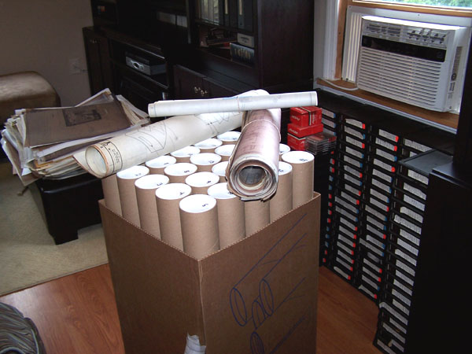
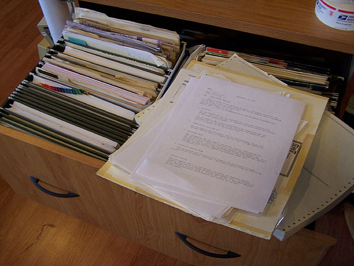
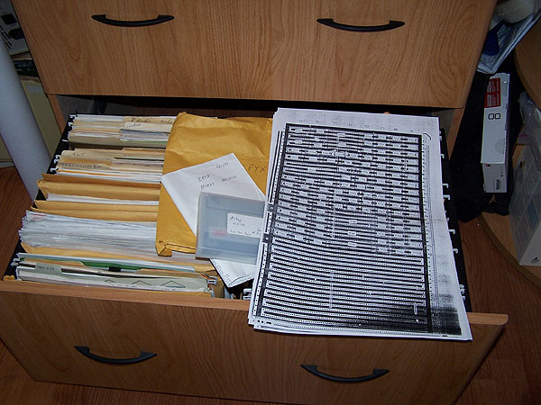
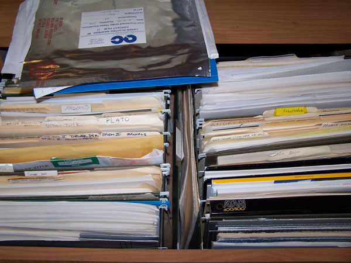
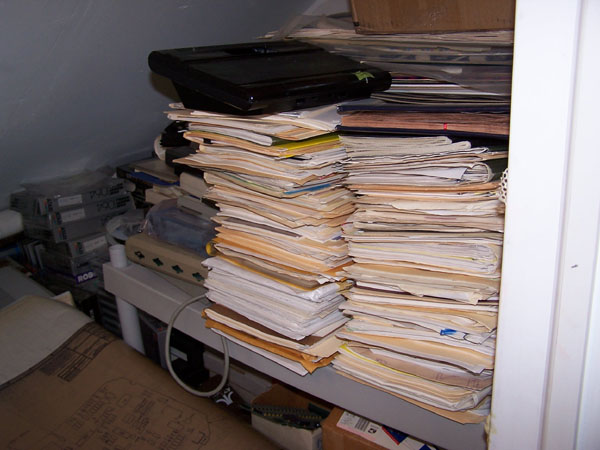
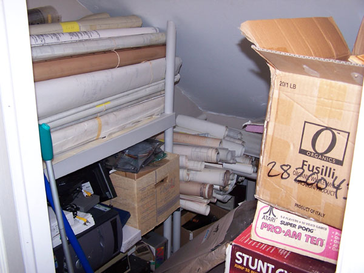

|
Greeting fellow Atari enthusiasts... You've heard of Spring Cleaning... well, its time for Summer Straightening...
A Massive archival cataloging project was started today, first project - to separate, catalog and tube the 4,700 blueprints, mechanical drawings and schematics. They weigh a ton, so only a couple hundred at a time can be done, so hopefully the first 1,000 will be done by the end of the week.... 
I've purchase 3 batches of 3" X 36" tubes so that should be a good start on those, most likely I'll need more, but I'll wait till things get a bit more manageable and then order another case. This will all go into an Excel Spreadsheet and finally all the people who ask for scan's or copies of stuff, I won't take a year to find, now everything will be cataloged and easily accessible.
Next its onto the filing cabinets and getting everything straightened out in here, plus I need to add more cabinets as I have quite a few more folders on shelves right now patiently waiting for a home...    Lots of folders waiting for a home in a filing cabinet....  The Internal Server Room, had to move all of the archives off of the main external server because someone was mirroring the whole website and stealing and publishing documents which weren't ready for posting up onto the public website, no more of that now, everything stays safe and secure behind the firewall on the internal network. Also, lots more documents in here that also need to be cataloged and tubed too... 
Regards, Curt.
|